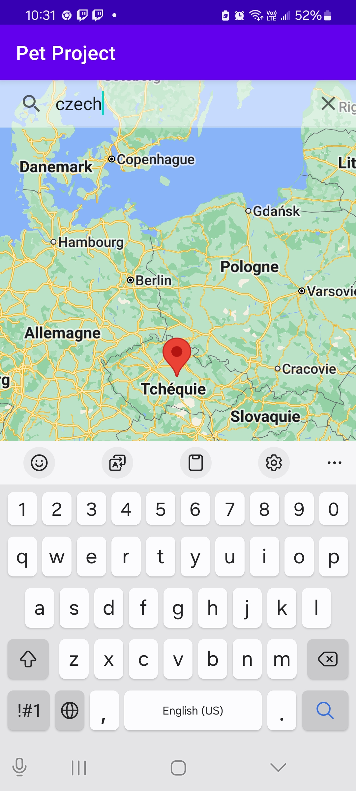
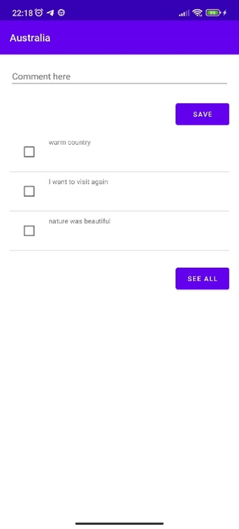
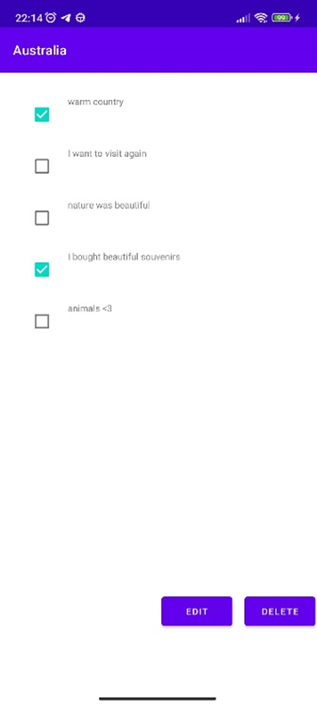
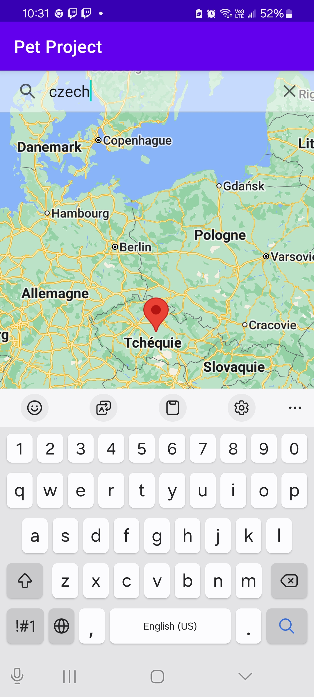
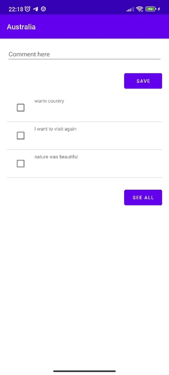
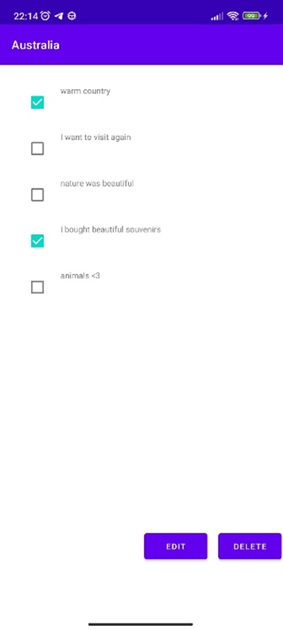

Louis RIVES-LEHTINEN
Licence d'informatique | CERI AvignonErasmus | VUT Brno University of Technology Télécharger mon CV
Ce projet a était réalisé en équipe de trois lors de mon Erasmus en Républic Tchèque. L'objectif du projet est de créer une application mobile destinée à tous les voyageurs, quel que soit leur âge. L'application serait une carte sur laquelle vous pourriez créer des notes pour chaque pays visité. L'intêret de ces notes est de décrire vos voyages : quand êtes vous y allés, ce que vous y avez fait, etc. L'application fonctionne comme un livre de souvenirs de tous vos voyages, afin que vous ne les oubliiez jamais.
Je me suis occupé de l'entiereté du premier onglet de l'application soit, l'intégration de la carte et récupéré les données du pays cliqué, l'ajout d'une bar de recherche pour trouver un pays ainsi que le système d'ajout de note.
Principales caractéristiques :
 




